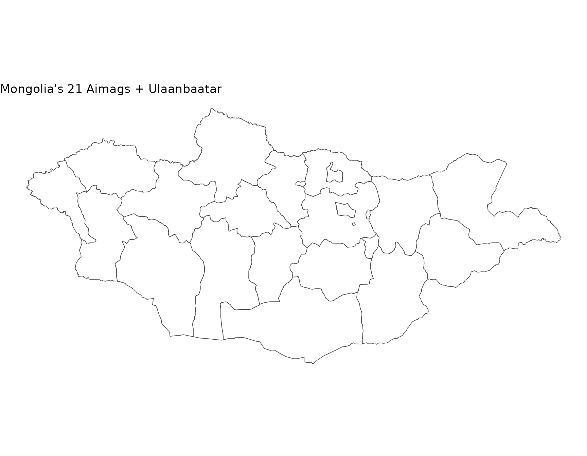

library(mongolstats)
library(sf)
library(dplyr)
library(ggplot2)
nso_options(mongolstats.lang = "en")
# Global theme with proper margins to prevent text cutoff
theme_set(
theme_minimal(base_size = 11) +
theme(
plot.margin = margin(10, 10, 10, 10),
plot.title = element_text(size = 13, face = "bold"),
plot.subtitle = element_text(size = 10, color = "grey40"),
legend.text = element_text(size = 9),
legend.title = element_text(size = 10)
)
)Overview
Geographic analysis is essential for understanding health disparities and targeting interventions. This guide demonstrates spatial epidemiology using Mongolia’s aimag-level (provincial) health data.
Getting Boundary Data
Mongolia’s administrative boundaries are available at three levels:
# ADM0: National boundary
country <- mn_boundaries(level = "ADM0")
# ADM1: Aimags (21 provinces + Ulaanbaatar)
aimags <- mn_boundaries(level = "ADM1")
# ADM2: Soums (districts)
soums <- mn_boundaries(level = "ADM2")
# Quick preview
aimags |>
ggplot() +
geom_sf(fill = "white", color = "grey30", size = 0.3) +
theme_void() +
labs(title = "Mongolia's 21 Aimags + Ulaanbaatar")
Case Study: Maternal Mortality Geography
Understanding Regional Disparities
Maternal mortality is a critical indicator of health system performance and equity.
# Fetch maternal mortality data for all aimags (2020-2024)
# We'll calculate a 5-year average to smooth out year-to-year variability
# This is important because small populations can have unstable rates
mmr_data <- nso_data(
tbl_id = "DT_NSO_2100_050V1", # MMR per 100,000 live births
selections = list(
"Region" = nso_dim_values("DT_NSO_2100_050V1", "Region")$code,
"Year" = as.character(2020:2024)
),
labels = "en"
) |>
filter(!Region %in% c("0", "1", "2", "3", "4", "511")) |> # Exclude Total, Regions, and duplicate UB
mutate(
Region_en = trimws(Region_en),
# Standardize region names to match the geographic boundaries
Region_en = dplyr::case_match(
Region_en,
"Bayan-Ulgii" ~ "Bayan-Ölgii",
"Uvurkhangai" ~ "Övörkhangai",
"Khuvsgul" ~ "Hovsgel",
"Umnugovi" ~ "Ömnögovi",
"Tuv" ~ "Töv",
"Sukhbaatar" ~ "Sükhbaatar",
.default = Region_en
)
) |>
# Calculate 5-year average to reduce random variation
group_by(Region_en) |>
summarise(value = mean(value, na.rm = TRUE), .groups = "drop")
# Preview data
mmr_data |>
arrange(desc(value)) |>
select(Region_en, value) |>
head(10)
#> # A tibble: 10 × 2
#> Region_en value
#> <chr> <dbl>
#> 1 Khovd 70.4
#> 2 Arkhangai 65.9
#> 3 Selenge 60.7
#> 4 Sükhbaatar 54.0
#> 5 Hovsgel 48.4
#> 6 Dornogovi 45.3
#> 7 Töv 41.9
#> 8 Ulaanbaatar 40.4
#> 9 Bayan-Ölgii 39.1
#> 10 Bayankhongor 37.9Creating a Choropleth Map
# Join health data to geographic boundaries for spatial analysis
mmr_map <- aimags |>
left_join(mmr_data, by = c("shapeName" = "Region_en"))
# Create choropleth map
p <- mmr_map |>
ggplot() +
geom_sf(aes(fill = value), color = "white", size = 0.2) +
scale_fill_viridis_c(
option = "rocket",
direction = -1, # dark = high mortality (concerning)
name = "MMR\n(per 100k)",
labels = scales::label_number()
) +
labs(
title = "5-Year Average Maternal Mortality Ratio (2020-2024)",
subtitle = "Deaths per 100,000 live births (Mean)",
caption = "Source: NSO Mongolia"
) +
theme_void() + # removes axes for clean map appearance
theme(
plot.title = element_text(face = "bold", size = 16),
plot.subtitle = element_text(color = "grey40"),
legend.position = "bottom", # bottom legend maximizes map width
legend.title = element_text(size = 10, face = "bold"),
legend.key.width = unit(1.5, "cm") # wider legend key for continuous scale
)
p # print static ggplot
Case Study: Infant Mortality Hot Spots
Identifying High-Risk Regions
# Get infant mortality rates
imr_tbl <- "DT_NSO_2100_015V1" # IMR per 1,000 live births (Monthly)
# Get metadata
months <- nso_dim_values(imr_tbl, "Month", labels = "en")
months_2024 <- months |>
filter(grepl("2024", label_en)) |>
pull(code)
imr_data <- nso_data(
tbl_id = imr_tbl,
selections = list(
"Region" = nso_dim_values(imr_tbl, "Region")$code,
"Month" = months_2024
),
labels = "en"
) |>
filter(nchar(Region) == 3) |> # Keep only Aimags and Ulaanbaatar
mutate(
Region_en = trimws(Region_en),
Region_en = dplyr::case_match(
Region_en,
"Bayan-Ulgii" ~ "Bayan-Ölgii",
"Uvurkhangai" ~ "Övörkhangai",
"Khuvsgul" ~ "Hovsgel",
"Umnugovi" ~ "Ömnögovi",
"Tuv" ~ "Töv",
"Sukhbaatar" ~ "Sükhbaatar",
.default = Region_en
)
) |>
# Calculate annual average
group_by(Region_en) |>
summarise(value = mean(value, na.rm = TRUE), .groups = "drop") |>
mutate(
# Classify risk levels
risk_category = case_when(
value < 10 ~ "Low (<10)",
value < 20 ~ "Medium (10-20)",
value < 30 ~ "High (20-30)",
TRUE ~ "Very High (≥30)"
),
risk_category = factor(
risk_category,
levels = c("Low (<10)", "Medium (10-20)", "High (20-30)", "Very High (≥30)")
)
)
# Create risk category map
p <- aimags |>
left_join(imr_data, by = c("shapeName" = "Region_en")) |>
ggplot() +
geom_sf(aes(fill = risk_category), color = "white", size = 0.2) +
scale_fill_manual(
values = c(
"Low (<10)" = "#27ae60", # green = good outcome
"Medium (10-20)" = "#f1c40f", # yellow = caution
"High (20-30)" = "#e67e22", # orange = concerning
"Very High (≥30)" = "#c0392b" # red = critical
),
na.value = "grey90", # missing data shown in light grey
name = "Risk Level\n(IMR)",
drop = FALSE # show all levels even if not present in data
) +
labs(
title = "Infant Mortality Risk Categories (2024 Average)",
subtitle = "Deaths per 1,000 live births",
caption = "Source: NSO Mongolia"
) +
theme_void() +
theme(
plot.title = element_text(face = "bold", size = 16),
plot.subtitle = element_text(color = "grey40"),
legend.position = "bottom", # bottom legend maximizes map width
legend.title = element_text(size = 10, face = "bold")
)
p # print static ggplot
Tips for Spatial Epidemiology
- Check data completeness: Not all aimags may have data for all indicators
- Use appropriate scales: Choose color scales that highlight health disparities
- Add context: Include reference lines (e.g., national average) when relevant
- Consider population size: Normalize rates by population when comparing regions
- Temporal analysis: Create animated maps to show geographic trends over time
Next Steps
- Discover Health Data: Return to the Discovery Guide
- Learn More: Explore all functions in the Reference